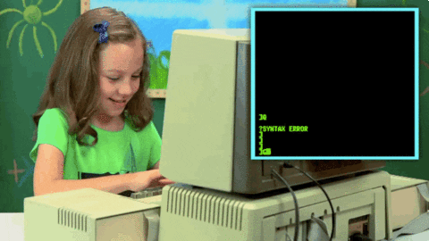
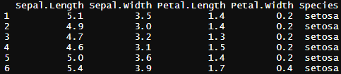

Analyse de Données et Modélisation
Appuyez sur "m"pour afficher le sommaire
M. Karar
I-1. Obtenir et installer R et RStudio
Allez sur le site web https://cran.r-project.org/
allez sur https://cran.r-project.org/
Cliquez sur base
Puis téléchargez R.3.6.2
Allez sur https://rstudio.com/ puis cliquez sur Download
Cliquez sur Download
Cliquez sur older version of RStudio https://cran.r-project.org/
Cliquez sur Installer pour télécharger
I-3. Introduction au langage R
R est un langage de programmation et logiciel libre dédié aux statistiques et à l'analyse de données. Il a été conçu en 1992 par les statisticiens Ross Ihaka et Robert Gentleman.
I-3. Introduction au langage R
Un langage de programmation ? C'est quoi ?
I-3. Introduction au langage R
Beaucoup pensent que c'est ça ! 
I-3. Introduction au langage R
Mais en réalité ce n'est que ça

b <- 3 "cette ligne créé une variable b et lui donne une valeur de 3"
a <- 2 "cette ligne crée une variable a et lui donne une valeur de 2"
print(b*a+2) "simple multiplication et addition"
b^2 "b²"
I-3. Introduction au langage R [Math de base]
Toutes les opérations arithmétiques courantes et les fonctionnalités mathématiques sont disponible dans la console R. Vous pouvez effectuer des additions, des soustractions, des multiplications et des divisions avec les symboles +,-,* et /, respectivement.
5 + 3 # = 8
5 * 5 # = 25
5^2 # = 25
(7 + 2)^2 + 4 # = 85
log(5) # = 1.609438
I-3. Introduction au langage R [Déclaration d'une variable]
Pour enregistrer des objets dans la session active il faut la déclarer et les assigner à une variable.
a <- 5
b <- "Macaca sylvanus"
a * 5
> a <- 5
> b <- "Macaca sylvanus"
> a*2
[1] 10
I-3. Introduction au langage R [Déclaration d'une variable]
On peut à tout moment vérifier quelles sont les variables qu'on a déjà crée en utilisant la fonction ls().
ls()
> ls()
[1] "a" "b"
On peut supprimer les variables qu'on a déjà crée en utilisant la fonction rm().
rm(a)
ls()
> rm(a)
[1] "a" "b"
> ls()
[1] "b"
I-3. Introduction au langage R [Les types de données]
Il y a six types d'objets fréquemment utilisés sur R: les vecteurs, les listes, les matrices, les "arrays", les facteurs et les data frames. Le plus simple d'entre eux est l'objet vecteur. Ce dernier peut avoir six différents types de données (ou classes): logique, numérique, entier, complexe, caractère et raw.
I-3. Introduction au langage R [Les types de données]
La classe logique
v <- TRUE
print(class(v))
[1] "logical"
I-3. Introduction au langage R [Les types de données]
La classe numérique
v <- 23.5
print(class(v)
[1] "numeric"
I-3. Introduction au langage R [Les types de données]
La classe entier
v <- 2L
print(class(v))
[1] "integer"
I-3. Introduction au langage R [Les types de données]
La classe complexe
v <- 2+5i
print(class(v))
[1] "complex"
I-3. Introduction au langage R [Les types de données]
La classe caractère
v <- "TRUE"
print(class(v))
[1] "character"
I-3. Introduction au langage R [Les types de données]
La classe raw
v <- charToRaw("Hello")
print(class(v))
[1] "raw"
I-3. Introduction au langage R [Les vecteurs]
Le vecteur est la plus petite unité fonctionnelle du langage R. Un vecteur peut être succession de plusieurs valeurs, ou une valeur unique.
monVecteur <- c(2,4,5,6,8,7,4,5)
monVecteur
unAutreVecteur <- c(451)
unAutreVecteur
> monVecteur
[1] 2 4 5 6 8 7 4 5
>unAutreVecteur
[1] 451
I-3. Introduction au langage R [Les vecteurs]
Ils peuvent avoir différentes classes (numérique, complexe, caractère, etc.) mais les valeurs qui les composent doivent toutes avoir la même classe.
monVecteur <- c(2,4,5,6,8,7,4,5)
class(monVecteur)
monVecteur2 <- c(2,4,5,6,8,7,4,5,"Macaca")
class(monVecteur2)
> class(monVecteur)
[1] "numeric"
> class(monVecteur2)
[1] "character"
I-3. Introduction au langage R [Les vecteurs]
Il existe différentes méthodes pour créer un vecteur, en utilisant les fonctions suivantes: seq(), rep(), ou alors en combinant des vecteurs déjà existants.
vecteur1 <- c(2,4,5,6,8,7,4,5)
vecteur2 <- c(vecteur1, 55, 56, 57)
vecteur2
vecteur2
[1] 2 4 5 6 8 7 4 5 55 56 57
I-3. Introduction au langage R [Les vecteurs]
La fonction seq() se présente de la forme suivante:
seq(from=nombre, to=nombre, by=nombre)
Elle a trois arguments.
a <- seq(3, 12,1) #sequence de 3 à 12 avec un pas de 1
a
a2 <- seq(3,12)
a2
> a
[1] 3 4 5 6 7 8 9 10 11 12
> a2
[1] 3 4 5 6 7 8 9 10 11 12
I-3. Introduction au langage R [Les vecteurs]
La fonction rep() se présente de la forme suivante:
rep(x=, times=, ...)
Elle a deux principaux arguments.
ecoNiveau <- rep("master ecologie", 3)
ecoNiveau
[1] "master ecologie" "master ecologie" "master ecologie"
I-3. Introduction au langage R [Les vecteurs]
On peut faire un tri croissant ou décroissant des valeurs d'un vecteur
en utilisant fonction sort() qui se présente comme suit:
sort(x=, times=, ...)
Elle a deux principaux arguments.
sort(c(544,2,5,4,5,56,85,4), decreasing = T)
sort(c(544,2,5,4,5,56,85,4), decreasing = F)
[1] 544 85 56 5 5 4 4 2 #décroissant
[1] 2 4 4 5 5 56 85 544 #croissant
I-3. Introduction au langage R [Les vecteurs]
l est possible qu’on ait besoin de tirer une partie d’un vecteur ou
juste unevaleur, il faudra alors recourir à l’indexation.
a <-c(0,6,5,4,8,2,5,16,47,11)
length(a) #retourne la longueur de a
a[5] #retourne l'observation stockée à l'index 5
[1] 10
[1] 8
I-3. Introduction au langage R [Les vecteurs]
Indexation à l'aide d'un vecteur
a <-c(0,6,5,4,8,2,5,16,47,11)
index1 <- c(5,6,8,9,10)
a[index1] #retourne l'observation stockée à l'index "index1"
[1] 8 2 16 47 11
I-3. Introduction au langage R [Les dataframes]
Les data frames ou les tableaux de données sont des objets à deux dimensions. Ils stockent en colonnes différentes variables pour différentes observations (ou individus) sur les lignes. On peut prendre comme exemple lefameux tableau iris
head(iris) # retourne les premières lignes du tableau iris

I-3. Introduction au langage R [Les dataframes]
Pour créer un data frame on peut recourir à la fonction data.frame() en fusionnant des vecteurs comportant le même nombre d’observations
a <- c(1,85,7,8)
b <- c(6,4,7,6)
c <- c(5,4,5,5)
tab1 <- data.frame(a,b,c)
tab1
I-3. Introduction au langage R [Les dataframes]
On peut proceder au changement des noms de colonnes d’un dataframe avecla fonction colnames()
a <- c(1,85,7,8)
b <- c(6,4,7,6)
c <- c(5,4,5,5)
tab1 <- data.frame(a,b,c)
tab1
colnames(tab1) <- c(col1,col2,col3) # cette ligne va generer des
# erreurs parceque
# col1, col2 et col3 ne sont
# pas des variables actives
colnames(tab1) <- c("col1","col2","col3")
tab1
I-3. Introduction au langage R [Les dataframes]
On peut créer une autre colonne pour le data frame tab1 colnames()
col4 <- c(rep("text", 4))
tab1 <- data.frame(tab1, col4)
tab1
I-3. Introduction au langage R [Les dataframes]
Pour changer le nom d'une seule colonne, on peut recourir à l'indexation et ce en selectionnant le nom de colonne cible sur le vecteur retourné par la fonction colnames(), puis de lui assigner un nouveau nom.
colnames(tab1)[4] <- "colText" #indexation directe
I-3. Introduction au langage R [Les dataframes]
Il est possible d'extraire une partie d'un tableau de données avec $. l'objet retourné est de type vecteur.
tab$col1
[1] 1 85 7 8
I-3. Introduction au langage R [Les dataframes]
Etant donné que les data frames sont des objet à deux dimensions (lignes, colonnes), il est possible d'extraire un objet à deux dimensions avec [] comme suit: tableau[vecteur, vecteur]. Le premier argument [1, ] concerne les lignes. Le deuxième [ , 2] concerne les colonnes.
iris[1:4, c("Species", "Sepal.Length")]
I-3. Introduction au langage R [Les dataframes]
Retirer des colones ou des lignes de l'indexe en utilisant "-" sur la/les colones/lignes cibles.
tab1 <- data.frame(tab1, col4)
tab1
I-3. Introduction au langage R [Les dataframes]
tab1 <- tab1[-c(3,4), -4]
tab1
I-3. Introduction au langage R [Les dataframes]
La puissance du R réside dans le fait qu'il soit un langage de programmation. En utilisant les possibilités qu'offre la programmation, on peut extraire une partie d'un tableau en ayant recours à un indexe de type logique.
iris[iris$Sepal.Length>7.3 , -c(2,3,4)]
I-3. Introduction au langage R [Les dataframes]
Exo*
En vous servant d'un indexe de type logique, écrivez le script qui permet d'extraire du tableau iris
toutes les observations pour toutes les variables consernant Iris virginica. puis assignez
le tableau résultant à la variable iris2.
I-3. Introduction au langage R [Les dataframes]
str(iris) # la foction génere un résumé du tableau iris
'data.frame': 150 obs. of 5 variables:
$ Sepal.Length: num 5.1 4.9 4.7 4.6 5 5.4 4.6 5 4.4 4.9 ...
$ Sepal.Width : num 3.5 3 3.2 3.1 3.6 3.9 3.4 3.4 2.9 3.1 ...
$ Petal.Length: num 1.4 1.4 1.3 1.5 1.4 1.7 1.4 1.5 1.4 1.5 ...
$ Petal.Width : num 0.2 0.2 0.2 0.2 0.2 0.4 0.3 0.2 0.2 0.1 ...
$ Species : chr "setosa" "setosa" "setosa" "setosa" ...
I-3. Introduction au langage R
[Les listes]
Comme pour les data frames, les listes peuvent stocker des données de differents types (classes). Leur structure leur permet de stocker des données (objets) du'une manière très flexible.
I-3. Introduction au langage R
[Les listes]
En effet, une liste peut contenir une matrice numérique, un data frame, une chaîne de caractères, un objet de type facteur, et peut même faire partie d'une autre liste.
I-3. Introduction au langage R
Pour créer une liste on a recours à la fonction list().
I-3. Introduction au langage R
[Les listes]
etudiants <- list( "Nassim Dali" = data.frame(notes = c(12, 12),
exam = c("TP", "EMD")))
etudiants
$`Nassim Dali`
notes exam
1 12 TP
2 12 EMD
I-3. Introduction au langage R
[Les listes]
II. Statistiques déscriptives et graphiques avec ggplot2
Veuillez raffrechir la page si la console ne s'affiche pas
# no pec
# Cette console R ne marche pas sans connexion internet
# Introduisez votre code puis exécutez le